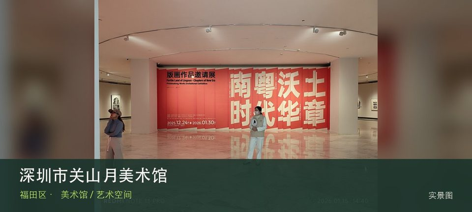

适合谁
适合中国画、近现代艺术和初次看展者；展览更换期需先查展讯。

SHENZHEN GUIDE · 027
莲花山南侧 · 美术馆 / 艺术空间
深圳市关山月美术馆位于莲花山南侧，以关山月艺术研究、近现代中国美术与当代专题展为核心，位置适合与莲花山形成自然和艺术的一日短线。这里的价值随展期变化，应把关山月艺术研究与近现代美术展览放在同一次观看中，辨认作品、空间和所在街区的关系。先查当期展讯与入口，不把官方名录中的地址等同于随时可入场。
WHY GO
适合中国画、近现代艺术和初次看展者；展览更换期需先查展讯。
先看一场主展并阅读策展前言，再决定是否进入其他展厅；不要把登山和看完全部展览挤在一起。
公共交通先到莲花山南侧片区，再以深圳市关山月美术馆公开参观入口为终点；校园、园区或预约型场馆须同时核对门禁与开放日。
自驾优先使用深圳市关山月美术馆所属建筑、园区或邻近正规公共停车场；预约时一并确认车牌登记、门岗和社会车辆准入规则。
全年可安排，炎热和降雨日更友好；展期、开幕活动与换展闭馆比季节本身更影响体验。
NEARBY IDEAS